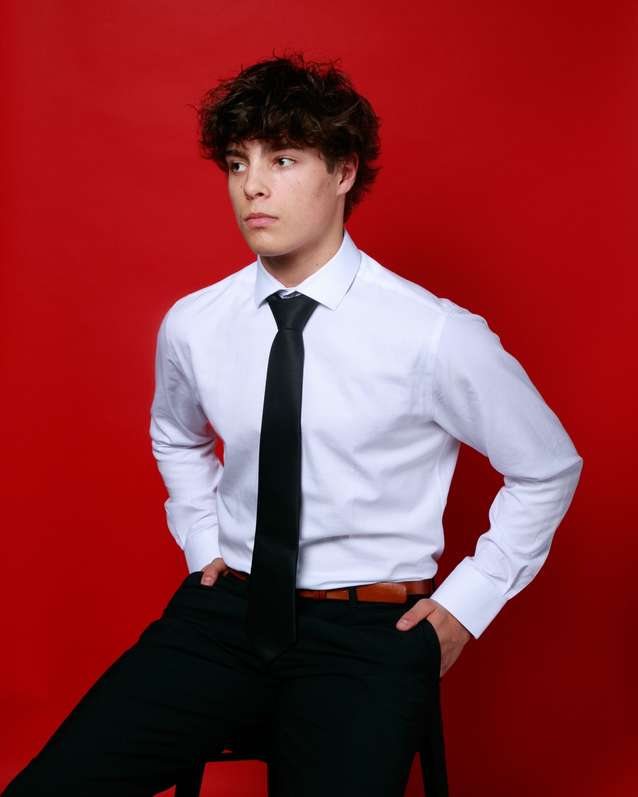

Nathan Ko
University of Waterloo, Mathematics & Finance
Nathan brings a strong interest in mathematics and a student-first approach to tutoring. He focuses on helping students understand the logic behind each topic, not just memorize steps.
Who We Are
Aim High started in our final year of high school with a simple idea, that a love for math is something worth sharing. What began as informal sessions with a few students quickly revealed something we hadn't expected: the most effective tutoring doesn't always come from a teacher behind a desk. It comes from someone who sat in the same seat not long ago, remembering exactly where the confusion sets in. That insight shaped everything we built from there. Within nine months, what started as a passion project had grown to 17 students.
University of Waterloo, Mathematics & Finance
Nathan brings a strong interest in mathematics and a student-first approach to tutoring. He focuses on helping students understand the logic behind each topic, not just memorize steps.

University of British Columbia, Mechanical Engineering
Luca helps students build strong problem-solving habits through patient, structured support. His sessions focus on making difficult concepts feel manageable and useful.